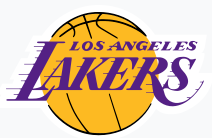

Lakers
The Los Angeles Lakers are an American professional basketball team based in Los Angeles. The Lakers compete in the National Basketball Association (NBA) as a member of the league's Western Conference Pacific Division. The Lakers play their home games at Staples Center, an arena shared with the NBA's Los Angeles Clippers, the Los Angeles Sparks of the Women's National Basketball Association, and the Los Angeles Kings of the National Hockey League. The Lakers are one of the most successful teams in the history of the NBA, and have won 17 NBA championships, tied with the Boston Celtics for the most in NBA history. The franchise began with the 1947 purchase of a disbanded team, the Detroit Gems of the National Basketball League (NBL). The new team began playing in Minneapolis, Minnesota, calling themselves the Minneapolis Lakers. Initially a member of the NBL, the Lakers won the 1948 NBL championship before joining the rival Basketball Association of America, where they would win five of the next six championships, led by star George Mikan. After struggling financially in the late 1950s following Mikan's retirement, they relocated to Los Angeles before the 1960–61 season. Led by Hall of Famers Elgin Baylor and Jerry West, Los Angeles made the NBA Finals six times in the 1960s, but lost every series to the Celtics, beginning their long and storied rivalry. In 1968, the Lakers acquired four-time NBA Most Valuable Player (MVP) Wilt Chamberlain, and won their sixth NBA title—and first in Los Angeles—in 1972, led by new head coach Bill Sharman. After the retirement of West and Chamberlain, the team traded for superstar Kareem Abdul-Jabbar, who won multiple MVP awards with the Lakers. While the team was unable to advance to the Finals in the late 1970s, two momentous changes came in 1979 that would inaugurate a new golden era for the franchise. First, Jerry Buss purchased the Lakers, and as the team's owner, pioneered a vision of basketball games as entertainment spectacles as well as sporting events. Second, the Lakers drafted Magic Johnson first overall in the 1979 NBA Draft. The combination of Johnson, a passing prodigy, and Abdul-Jabbar provided the Lakers with two superstars to anchor their roster. The additions of head coach Pat Riley in 1981, and James Worthy through the 1982 NBA Draft, established the Lakers as an NBA powerhouse in the 1980s. The team was nicknamed the "Showtime Lakers" due to its fast break, transition offense facilitated by Johnson. The team won five championships in a nine-year span, including several marquee Finals matchups against its archrival, the Celtics. After Abdul-Jabbar, Johnson, and Worthy retired, the team struggled in the 1990s until it drafted Kobe Bryant and signed Shaquille O'Neal in 1996. The superstar duo, along with Hall of Fame coach Phil Jackson, led the Lakers to three consecutive championships between 2000 to 2002, securing the franchise's second "three-peat." After the team lost in the 2004 NBA Finals, the "Shaq-and-Kobe" era ended when the Lakers traded away O'Neal. It was not until the Lakers traded for Pau Gasol that Bryant and Jackson returned to the NBA Finals, winning two more titles in 2009 and 2010. The team failed to regain its former glory during the rest of the decade, and Bryant retired in 2016. In 2020, the Lakers—led by LeBron James, Anthony Davis, and coach Frank Vogel—secured their 17th championship, tying the Celtics for the most titles in NBA history. The Lakers hold the record for NBA's longest winning streak, 33 straight games, set during the 1971–72 season. Twenty-six Hall of Famers have played for Los Angeles, while four have coached the team. Four Lakers—Abdul-Jabbar, Johnson, O'Neal, and Bryant—have won the NBA MVP Award for a total of eight awards.
Kobe Bean Bryant (/ˈkoʊbiː/ KOH-bee; August 23, 1978 – January 26, 2020) was an American professional basketball player. A shooting guard, he spent his entire 20-year career with the Los Angeles Lakers in the National Basketball Association (NBA). Regarded as one of the greatest players of all time, Bryant helped the Lakers win five NBA championships, and was an 18-time All-Star, a 15-time member of the All-NBA Team, a 12-time member of the All-Defensive Team, the 2008 NBA Most Valuable Player (MVP), and a two-time NBA Finals MVP. Bryant also led the NBA in scoring twice, and ranks fourth on the league's all-time regular season scoring and all-time postseason scoring lists. Born in Philadelphia and partly raised in Italy, Bryant was recognized as the top high-school basketball player in the U.S. while at Lower Merion High School in Pennsylvania. The son of former NBA player Joe Bryant, he declared for the 1996 NBA draft after graduation, and was selected by the Charlotte Hornets with the 13th overall pick; the Hornets then traded him to the Lakers. As a rookie, Bryant earned a reputation as a high-flyer and a fan favorite by winning the 1997 Slam Dunk Contest, and he was named an All-Star by his second season. Despite a feud with teammate Shaquille O'Neal, the pair led the Lakers to three consecutive NBA championships from 2000 to 2002. In 2003, Bryant was charged with sexual assault following an accusation by a young female hotel clerk. The criminal charges were dropped after the accuser refused to testify, and a lawsuit was settled out of court. Bryant issued a public apology and admitted to a sexual encounter but denied the assault allegation and said it was consensual. After the Lakers lost the 2004 NBA Finals, O'Neal was traded and Bryant became the cornerstone of the Lakers. He led the NBA in scoring during the 2005–06 and 2006–07 seasons. In 2006, he scored a career-high 81 points; the second most points scored in a single game in league history, behind Wilt Chamberlain's 100-point game in 1962. Bryant led the team to two consecutive championships in 2009 and 2010, and was named NBA Finals MVP on both occasions. He continued to be among the top players in the league through 2013, when he suffered a torn Achilles tendon at age 34. He subsequently suffered season-ending injuries to his knee and shoulder, respectively, in the following two seasons. Citing physical decline, Bryant retired after the 2015–16 season. Bryant is the all-time leading scorer in Lakers franchise history. He was also the first guard in NBA history to play at least 20 seasons. His 18 All-Star designations are the second most all time, while it is the record for most consecutive appearances as a starter. Bryant's four All-Star Game MVP Awards are tied with Bob Pettit for the most in NBA history. He gave himself the nickname "Black Mamba" in the mid-2000s, and the epithet became widely adopted by the general public. At the 2008 and 2012 Summer Olympics, he won two gold medals as a member of the U.S. national team. In 2018, he won the Academy Award for Best Animated Short Film for his 2017 film Dear Basketball. Bryant died at age 41, along with his 13-year-old daughter Gianna and seven others, in a helicopter crash in Calabasas, California in 2020. A number of tributes and memorials were subsequently issued, including renaming the All-Star Game MVP Award in his honor.
 Anthony Marshon Davis Jr. (born March 11, 1993) is an American professional basketball player for the Los Angeles Lakers of the National Basketball Association (NBA). He plays the power forward and center positions. Davis is a seven-time NBA All-Star and has been named to four All-NBA First Teams and four NBA All-Defensive Teams. In his first season with the Lakers, he won an NBA championship in 2020.
Davis played one season of college basketball for the University of Kentucky, when he was first team All-American and the Consensus National Player of the Year. He also won the USBWA National Freshman of the Year, NABC Defensive Player of the Year and the Pete Newell Big Man Award. Davis led the NCAA in blocks and set Southeastern Conference and NCAA Division I freshman single-season blocked shots records. He led Kentucky to a National Championship and was named Most Outstanding Player of the NCAA tournament.
Davis left college for the NBA after one season and was drafted as the first overall pick in the 2012 NBA draft by the New Orleans Pelicans, known then as the New Orleans Hornets, and was selected that summer to play in the 2012 Olympics. After his rookie season, he was named to the NBA All-Rookie First Team. The next season, he became an All-Star for the first time and led the NBA in blocked shots per game. He has since become the youngest player to score at least 59 points in an NBA game. In 2017, he was named the recipient of the NBA All-Star Game MVP Award after setting an All-Star Game scoring record of 52 points. Davis was traded to the Lakers in 2019. He has won gold medals with the United States national team on their 2012 Olympic team and 2014 World Cup team, making him the first player in basketball history to win an NCAA title, NBA title, Olympic Gold Medal, and FIBA World Cup.
Anthony Marshon Davis Jr. (born March 11, 1993) is an American professional basketball player for the Los Angeles Lakers of the National Basketball Association (NBA). He plays the power forward and center positions. Davis is a seven-time NBA All-Star and has been named to four All-NBA First Teams and four NBA All-Defensive Teams. In his first season with the Lakers, he won an NBA championship in 2020.
Davis played one season of college basketball for the University of Kentucky, when he was first team All-American and the Consensus National Player of the Year. He also won the USBWA National Freshman of the Year, NABC Defensive Player of the Year and the Pete Newell Big Man Award. Davis led the NCAA in blocks and set Southeastern Conference and NCAA Division I freshman single-season blocked shots records. He led Kentucky to a National Championship and was named Most Outstanding Player of the NCAA tournament.
Davis left college for the NBA after one season and was drafted as the first overall pick in the 2012 NBA draft by the New Orleans Pelicans, known then as the New Orleans Hornets, and was selected that summer to play in the 2012 Olympics. After his rookie season, he was named to the NBA All-Rookie First Team. The next season, he became an All-Star for the first time and led the NBA in blocked shots per game. He has since become the youngest player to score at least 59 points in an NBA game. In 2017, he was named the recipient of the NBA All-Star Game MVP Award after setting an All-Star Game scoring record of 52 points. Davis was traded to the Lakers in 2019. He has won gold medals with the United States national team on their 2012 Olympic team and 2014 World Cup team, making him the first player in basketball history to win an NCAA title, NBA title, Olympic Gold Medal, and FIBA World Cup.